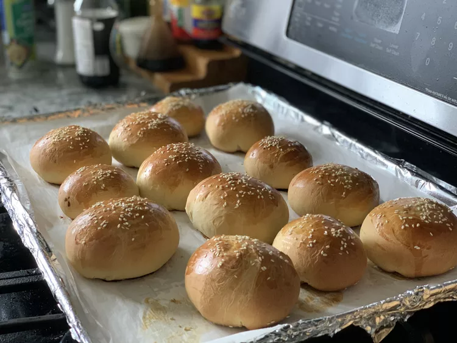

Chinese Sweet Bun Dough

Description
Fill these sweet buns with a BBQ filling, or sweet bean paste, or get creative!
After several experiments, I finally came up with the perfect dough — it's a cross between bread and pastry dough.
ingredients
- ½ cup white sugar
- 1 cup warm milk (110 degrees F/45 degrees C)
- 1 tablespoon active dry yeast
- 4 cups bread flour
- 2 eggs, beaten (divided)
- 6 tablespoons vegetable oil
- 2 teaspoons salt
- 2 teaspoons water
- 1 teaspoon sesame seeds for garnish (divided) (Optional)